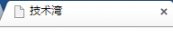

第 2 章 PHP程序开发---前端技术
2.2.1 HTML的基本结构
1丶网页设计的开始
1: 表格网页的设计
2: div+css网页的设计
2丶网页的后缀名
3丶网页源代码
通俗了解，通过html语法规则让图片、文字等内容，在浏览器显示出来的代码我们称之为网页源代码。
源代码(源文件)是指网页的html代码，这里可以将CSS代码也称为CSS源代码。
4丶HTML基本结构
很多时候学网页制作开发的时候第一看到的印象深刻的就是html或htm后缀结尾的网页，我们把这类网页归结为静态网页，伪静态除外。
那html或htm与其它如php、asp、aspx、jsp等后缀结尾的网页有什么区别呢？
html基本语言结构:
1 2 3 4 5 6 7 8 9 10 11 | <html> <head> <title>放置文章标题</title> <meta http-equiv="Content-Type" content="text/html; charset=gb2312" /> //这里是网页编码现在是gb2312 <meta name="keywords" content="关键字" /> <meta name="description" content="本页描述或关键字描述" /> </head> <body> 这里就是正文内容 </body> </html> |
完整HTML包括html DOCTYPE声明、title标题、head、网页编码声明等内容
最初使用完整的html源代码：
1 2 3 4 5 6 7 8 9 10 11 12 13 | <!DOCTYPE html PUBLIC "-//W3C//DTD XHTML 1.0 Transitional//EN"<head> <meta http-equiv="Content-Type" content="text/html; charset=utf-8" /> <title>标题部分-www.divcss5.com</title> <meta name="keywords" content="关键字" /> <meta name="description" content="本页描述或关键字描述" /> </head> <body> 内容 </body> </html> |
最新完整HTML结构-HTML源代码(推荐)：
1 2 3 4 5 6 7 8 9 10 11 12 | <!DOCTYPE html> <html lang="zh-CN"> <head> <meta charset="utf-8"> <title>网页标题-www.divcss5.com</title> <meta name="keywords" content="关键字" /> <meta name="description" content="此网页描述" /> </head> <body> 网页正文内容-WWW.DIVCSS5.COM -DIVCSS5提供 </body> </html> |
无论是html还是其它后缀的动态页面其html语言结构都是这样的，只是在命名网页文件时以不同的后缀结尾。
无论是动态还是静态页面都是以"<html>"开始，然后在网页最后以“</html>”结尾。
“<html>”后接着是“<head>”页头，其在<head></head>中的内容是在浏览器中内容无法显示的，这里是给服务器、浏览器、链接外部JS、a链接CSS样式等区域，而里面“<title></title>"中放置的是网页标题，可在浏览器最左上看见如图：

接着“<meta name="keywords" content="关键字" /> <meta name="description" content="本页描述或关键字描述" /> ”这两个标签里的内容是给搜索引擎看的说明本页关键字及本张网页的主要内容等SEO可以用到。
接着就是正文“<body></body> ”也就是常说的body区 ，这里放置的内容就可以通过浏览器呈现给用户，其内容可以是table表格布局格式内容，也可以DIV布局的内容，也可以直接是文字。这里也是最主要区域，网页的内容呈现区。
最后是以“</html> ”结尾，也就是网页闭合。
网页一般的根据xhtml标准都要求每个标签闭合，如：以<html> 开始，以</html>闭合；如果没有闭合如<meta name="keywords" content="关键字" />就没有</meta> 就要<meta 内容。。。 />来完成闭合。
以上就是通俗来讲的最简单的html语言结构，如果需要看更多更丰富的html语言结构，可打开一个网站的网页，然后点击浏览器的“查看”--然后点击“查看源代码”即可看见该网页的html语言结构，这样可以根据此源代码来分析此网页的HTML语言结构与内容。
5丶htm、html、shtml
● htm、html、shtml网页区别
首先htm、html、shtml都是静态网页的后缀，三者也可以说都是只是扩展名不同，其他一样，都是静态的网页。
Htm和html是完全静态的网页不通过服务器编译解释直接送出给浏览器读取的静态网页，以Htm和html伪静态Request除外。
html、htm、shtml、shtm均是静态html网页。都是网页文件后缀名不同的html网页扩展名。
● Html与htm
html与.htm均是静态网页后缀名，网页文件没有区别与区分，html与htm后缀网页后缀可以互换，对网页完全没有影响同时也没有区别。可以认为html与htm没有本质区别，唯一区别即多与少一个“L”。
● Shtml与shtm
shtml命名的网页文件里，使用了ssi的一些指令，就像asp中的指令，你可以在SHTML文件中写入SSI指令，当客户端访问这些shtml文件时，服务器端会把这些SHTML文件进行读取和解释，把SHTML文件中包含的SSI指令解释出来。
而shtml与shtm后缀的网页文件没有区别，后缀名可以互换，区别在于和html与htm一样多与少“L”。
● Html与shtml区别
本质上都属于静态网页一种，html属于纯静态，客户端浏览器读取html文件是什么就呈现给浏览者什么内容。而shtml则可以使用SSI。
6丶网页的!DOCTYPE
● !DOCTYPE声明及对网页起何作用
要建立符合标准的网页，DOCTYPE声明是必不可少的关键组成部分；除非你的XHTML确定了一个正确的DOCTYPE，否则你的标识和CSS都不会生效,也就是说如果没有这个DOCTYPE声明将会导致CSS失效-css无效，特别是没有声明或声明不正确将在标准浏览器下更是不能正常显示。
● DOCTYPE声明
开始制作符合标准的站点，第一件事情就是声明符合自己需要的DOCTYPE。
查看很多使用XHTML标准开发的网站，第一行就是：
1 | <!DOCTYPE html PUBLIC "-//W3C//DTD XHTML 1.0 Transitional//EN" "http://www.w3.org/TR/xhtml1/DTD/xhtml1-transitional.dtd"> |
打开一些符合标准的站点，例如著名web设计软件开发商Macromedia，会发现同样的代码。
而另一些符合标准的站点的代码则如下：
1 | <!DOCTYPE html PUBLIC "-//W3C//DTD XHTML 1.0 Frameset//EN" "http://www.w3.org/TR/xhtml1/DTD/xhtml1-frameset.dtd"> |
● 什么是DOCTYPE
上面这些代码我们称做DOCTYPE声明。DOCTYPE是document type(文档类型)的简写，用来说明你用的XHTML或者HTML是什么版本。
其中的DTD(例如上例中的xhtml1-transitional.dtd)叫文档类型定义，里面包含了文档的规则，浏览器就根据你定义的DTD来解释你页面的标识，并展现出来。
要建立符合标准的网页，DOCTYPE声明是必不可少的关键组成部分；除非你的XHTML确定了一个正确的DOCTYPE，否则你的标识和CSS都不会生效。
● XHTML 1.0 提供了三种DTD声明可供选择：
过渡的(Transitional)：要求非常宽松的DTD，它允许你继续使用HTML4.01的标识(但是要符合xhtml的写法)，完整代码如下：
1 | <!DOCTYPE html PUBLIC "-//W3C//DTD XHTML 1.0 Transitional//EN" "http://www.w3.org/TR/xhtml1/DTD/xhtml1-transitional.dtd"> |
严格的(Strict)：要求严格的DTD，你不能使用任何表现层的标识和属性，例如<br>，完整代码如下：
1 | <!DOCTYPE html PUBLIC "-//W3C//DTD XHTML 1.0 Strict//EN" "http://www.w3.org/TR/xhtml1/DTD/xhtml1-strict.dtd"> |
框架的(Frameset)：专门针对框架页面设计使用的DTD，如果你的页面中包含有框架，需要采用这种DTD，完整代码如下：
1 | <!DOCTYPE html PUBLIC "-//W3C//DTD XHTML 1.0 Frameset//EN" "http://www.w3.org/TR/xhtml1/DTD/xhtml1-frameset.dtd"> |
● 我们选择什么样的DOCTYPE?
理想情况当然是严格的DTD，但对于我们大多数刚接触web标准的设计师来说，过渡的DTD(XHTML 1.0 Transitional)是目前理想选择。
DOCTYPE声明必须放在每一个XHTML文档最顶部，在所有代码和标识之上
● html DOCTYPE作用
DOCTYPE是document type(文档类型)的简写，在Web设计中用来说明你用的XHTML或者HTML是什么版本。
要建立符合标准的XHTML网页，DOCTYPE声明是必不可少的关键组成部分；除非你的XHTML确定了一个正确的DOCTYPE，否则你的标识和CSS都不会生效。
一般放置在html网页代码最顶部
<!DOCTYPE html PUBLIC "-//W3C//DTD XHTML 1.0 Transitional//CN" "http://www.w3. org/TR/xhtml1/DTD/xhtml1-transitional.dtd">
通常html DOCTYPE声明是必须的，而且使用div+css更是必不可少，如果缺少或错误document将会造成你的CSS失效或半失效，即因为css失效，网页布局变乱，有的css属性不能体现。
如果你不能记住和正确输入DOCTYPE长串英文，没关系，DIVCSS5建议你使用DW软件直接新建html即可得到完整结构最基本html。
7丶UTF-8 GBK UTF8 GB2312
● UTF-8 GBK UTF8 GB2312之间的区别和关系
UTF-8：Unicode TransformationFormat-8bit，允许含BOM，但通常不含BOM。是用以解决国际上字符的一种多字节编码，它对英文使用8位（即一个字节），中文使用24为（三个字节）来编码。UTF-8包含全世界所有国家需要用到的字符，是国际编码，通用性强。UTF-8编码的文字可以在各国支持UTF8字符集的浏览器上显示。如，如果是UTF8编码，则在外国人的英文IE上也能显示中文，他们无需下载IE的中文语言支持包。
GBK是国家标准GB2312基础上扩容后兼容GB2312的标准。GBK的文字编码是用双字节来表示的，即不论中、英文字符均使用双字节来表示，为了区分中文，将其最高位都设定成1。GBK包含全部中文字符，是国家编码，通用性比UTF8差，不过UTF8占用的数据库比GBD大。
1、GBK通常指GB2312编码 只支持简体中文字
2、utf通常指UTF-8，支持简体中文字、繁体中文字、英文、日文、韩文等语言（支持文字更广）
3、通常国内使用utf-8和gb2312，看自己需求选择
8丶作业
通过网络查询HTML与HTM的区别
通过网络查询SHTML与SHTM的区别
写出网页的几种!DOCTYPE方式
必须掌握字符编码
练习网页的基本格式